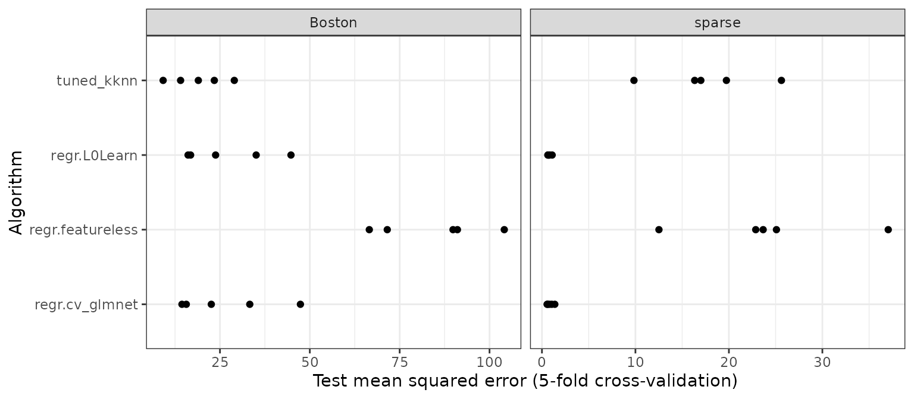

This vignette compares regr.L0Learn with a featureless
baseline, a lasso linear model (regr.cv_glmnet) and
k-nearest neighbors with the number of neighbors tuned between 1 and 30,
using 5-fold cross-validation on two data sets with numeric features
only.
library(mlr3)
library(mlr3learners)
library(mlr3tuning)
library(mlr3L0Learn)
library(data.table)
library(ggplot2)
lgr::get_logger("mlr3")$set_threshold("warn")
lgr::get_logger("bbotk")$set_threshold("warn")Data sets
The first data set is simulated: 200 rows, 50 features, and only the
first 5 features have a non-zero coefficient. The second is the real
Boston housing data from the MASS package (506
rows, 13 numeric features), where the target is the median home
value.
set.seed(1)
n_rows <- 200
n_features <- 50
x_mat <- matrix(
rnorm(n_rows * n_features), n_rows, n_features,
dimnames = list(NULL, sprintf("x%02d", seq_len(n_features))))
y_vec <- as.numeric(x_mat[, 1:5] %*% rep(2, 5) + rnorm(n_rows))
sparse_task <- as_task_regr(
data.frame(y = y_vec, x_mat), target = "y", id = "sparse")
boston_task <- as_task_regr(MASS::Boston, target = "medv", id = "Boston")
task_list <- list(boston_task, sparse_task)Learners
knn_tuner <- auto_tuner(
tuner = tnr("grid_search"),
learner = lrn("regr.kknn", k = to_tune(1, 30)),
resampling = rsmp("cv", folds = 3),
measure = msr("regr.mse"))
knn_tuner$id <- "tuned_kknn"
learner_list <- list(
lrn("regr.L0Learn", nFolds = 5L),
lrn("regr.featureless"),
lrn("regr.cv_glmnet"),
knn_tuner)Cross-validation
set.seed(1)
bench_grid <- benchmark_grid(task_list, learner_list, rsmp("cv", folds = 5))
bench_result <- benchmark(bench_grid)
score_dt <- bench_result$score(msr("regr.mse"))
score_dt[, .(mean_mse = mean(regr.mse), sd_mse = sd(regr.mse)),
by = .(task_id, learner_id)]
#> task_id learner_id mean_mse sd_mse
#> <char> <char> <num> <num>
#> 1: Boston regr.L0Learn 27.3156722 12.3689881
#> 2: Boston regr.featureless 84.6229527 15.3779285
#> 3: Boston regr.cv_glmnet 26.6650639 13.7971665
#> 4: Boston tuned_kknn 18.9266167 7.7502699
#> 5: sparse regr.L0Learn 0.7850789 0.1845453
#> 6: sparse regr.featureless 24.2370484 8.7235604
#> 7: sparse regr.cv_glmnet 0.8768506 0.3407752
#> 8: sparse tuned_kknn 17.7060683 5.7213560
ggplot(score_dt, aes(x = regr.mse, y = learner_id)) +
geom_point() +
facet_grid(. ~ task_id, scales = "free") +
labs(x = "Test mean squared error (5-fold cross-validation)", y = "Algorithm") +
theme_bw()
Number of selected features
L0 penalization is designed to give sparse models. The table counts the features with a non-zero coefficient when each learner is trained on all the rows of each data set.
count_dt <- rbindlist(lapply(task_list, function(task) {
l0 <- lrn("regr.L0Learn", nFolds = 5L)$train(task)
glmnet_learner <- lrn("regr.cv_glmnet")$train(task)
data.table(
task_id = task$id,
n_features = length(task$feature_names),
L0Learn = length(l0$selected_features()),
cv_glmnet = length(glmnet_learner$selected_features()))
}))
count_dt
#> task_id n_features L0Learn cv_glmnet
#> <char> <int> <int> <int>
#> 1: Boston 13 3 7
#> 2: sparse 50 8 9